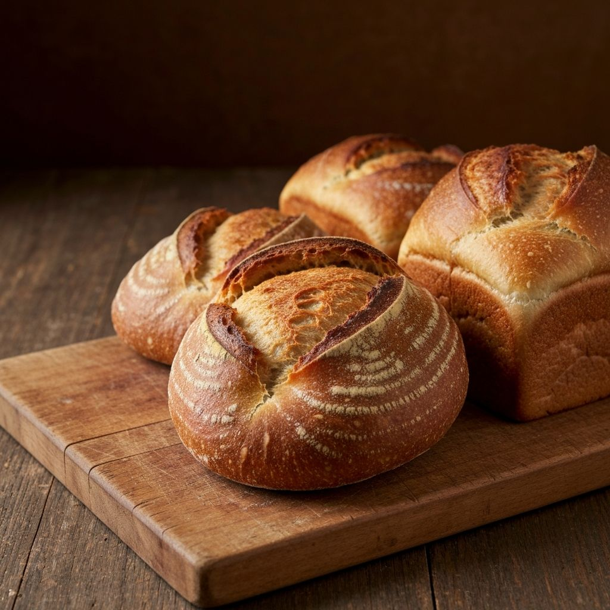
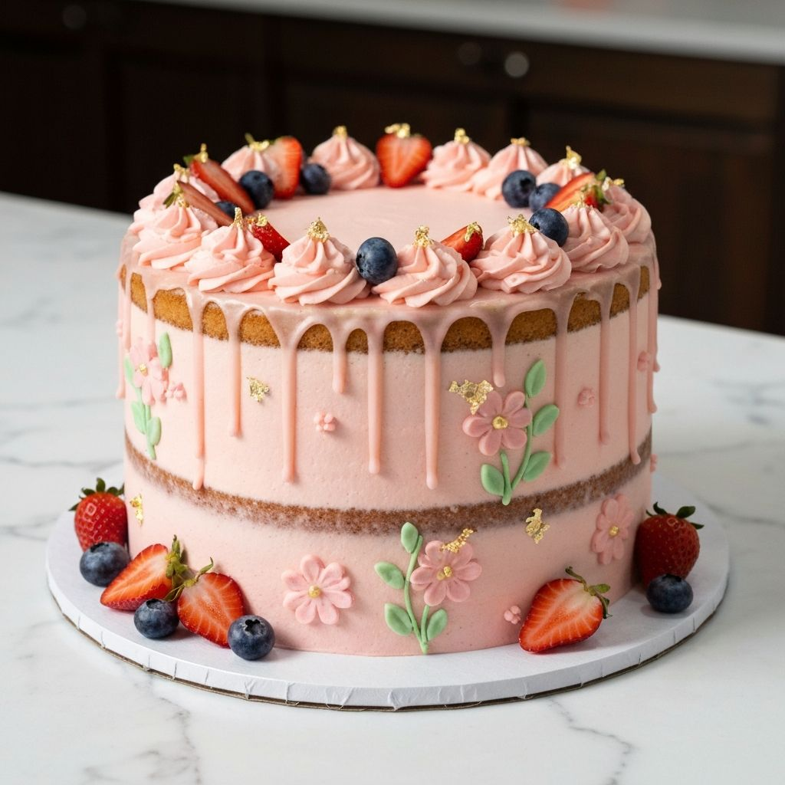
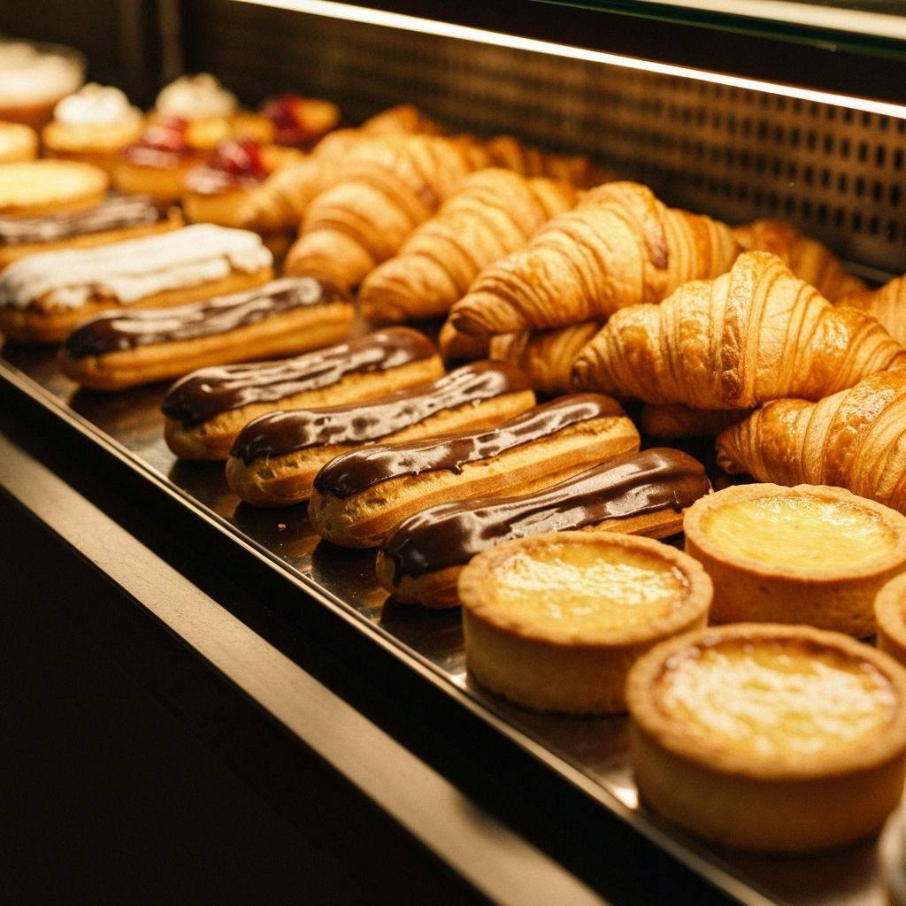
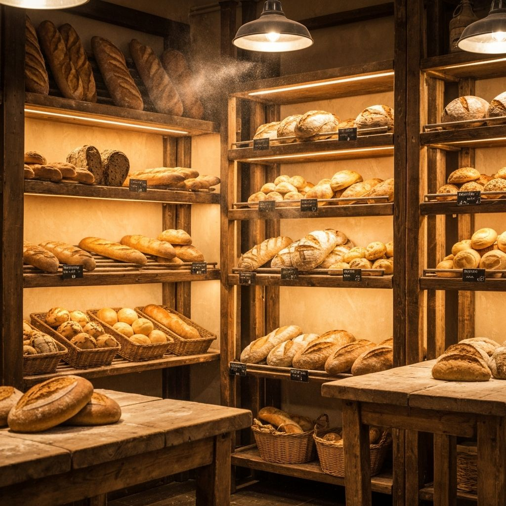

PANADERÍA ARTESANAL
El arte de hornear
con pasión
En La Fábrica creamos panes, tortas y postres artesanales con ingredientes de primera calidad y recetas tradicionales que despiertan los sentidos.
NUESTROS PRODUCTOS
Hechos con amor y tradición
Cada producto es elaborado artesanalmente siguiendo recetas tradicionales y utilizando los mejores ingredientes.

Panes
Panes artesanales horneados diariamente con masa madre y harinas seleccionadas. Desde baguettes crujientes hasta panes integrales nutritivos.
- Pan de masa madre
- Baguette francesa
- Pan integral
- Ciabatta

Tortas
Tortas elaboradas con amor para celebrar tus momentos especiales. Diseños personalizados y sabores inolvidables.
- Torta de chocolate
- Red velvet
- Tres leches
- Tortas personalizadas

Postres
Deliciosos postres y pastelería fina que endulzan cualquier ocasión. Croissants, éclairs y mucho más.
- Croissants
- Éclairs
- Tartaletas
- Galletas artesanales
Nuestros Servicios
Lo que nos hace especiales
Más que una panadería, somos un espacio donde la tradición y la innovación se unen para crear experiencias únicas.
Calidad Premium
Utilizamos ingredientes de primera calidad y técnicas artesanales para garantizar productos excepcionales.
Productos Frescos
Horneamos todos los días para ofrecerte productos recién hechos con el mejor sabor y textura.
Servicio a Domicilio
Llevamos nuestros productos hasta la puerta de tu casa. Comodidad sin perder frescura.
Pedidos Especiales
Diseñamos tortas y productos personalizados para tus eventos y celebraciones especiales.

SOBRE NOSOTROS
Una tradición familiar que perdura
La Fábrica nació hace más de 15 años con un sueño: llevar el auténtico sabor del pan artesanal a cada hogar. Lo que comenzó como una pequeña panadería familiar se ha convertido en un referente de calidad y tradición.
Nuestros maestros panaderos combinan técnicas ancestrales con innovación, seleccionando cuidadosamente cada ingrediente para crear productos que despiertan los sentidos y evocan los sabores de antaño.
Cada pan, torta y postre que sale de nuestros hornos lleva consigo el compromiso de excelencia que nos caracteriza.
experiencia
únicos
felices
actuales
NUESTRAS SEDES
Encuéntranos cerca de ti
Con 3 sedes estratégicamente ubicadas en Cúcuta, siempre tendrás una Fábrica cerca para disfrutar de nuestros productos frescos.
Sede Aniversario 2
- Barrio Aniversario 2, Cúcuta
- +57 300 000 0000
- Lun - Dom: 6:00 AM - 9:00 PM
Sede García Herreros
- Barrio García Herreros, Cúcuta
- +57 300 000 0000
- Lun - Dom: 6:00 AM - 9:00 PM
Sede Magdalena
- Barrio Magdalena, Cúcuta
- +57 300 000 0000
- Lun - Dom: 6:00 AM - 9:00 PM
EVENTOS
Celebra con nosotros
Hacemos de cada evento una experiencia única con nuestros productos artesanales y servicio personalizado.
Eventos Corporativos
Servicio de catering para reuniones empresariales, conferencias y eventos especiales con productos premium.
Celebraciones Especiales
Bodas, quinceañeras, cumpleaños y más. Diseñamos tortas personalizadas para hacer tu evento inolvidable.
Mesas Dulces
Sorprende a tus invitados con una selección exquisita de tartaletas, postres y bocados en un montaje espectacular.